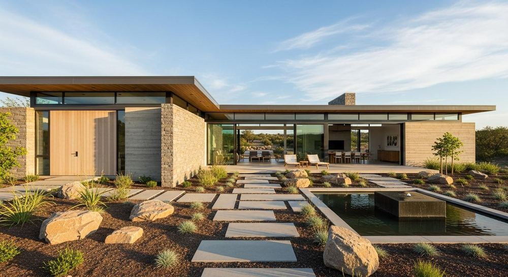
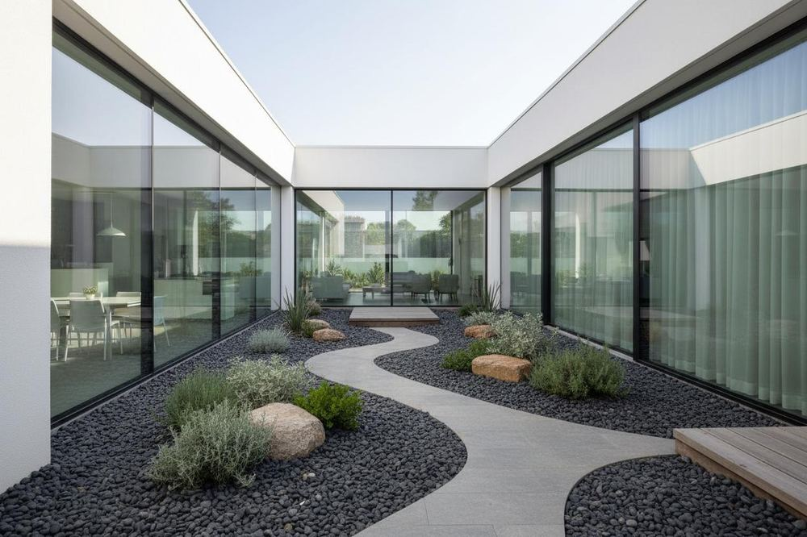

01 • Landscape Care
Maintenance
Regular outdoor maintenance to help keep gardens and landscaped areas neat, healthy, and cared for.
- Garden and landscape upkeep
- Plant care and seasonal tidy-ups
Landscape maintenance, installation, irrigation and outdoor design in Acworth and the surrounding north Atlanta communities.

One team for garden upkeep, installation, irrigation, outdoor layout and planting design. Explore the service that fits your property.
Regular outdoor maintenance to help keep gardens and landscaped areas neat, healthy, and cared for.

Installation of planting and outdoor features planned around your property, priorities, and project scope.

Irrigation solutions designed to help deliver water to planted areas and support garden health.

Outdoor layout and design planning shaped around your property, practical needs, and preferred style.

Garden design that brings planting, textures, pathways, and features together in a considered composition.

Have an outdoor project that does not fit one category? Tell us what you have in mind and we can discuss the scope.
Explore landscape concepts featuring natural materials, layered planting, and inviting outdoor living spaces.

A refined concept combining natural stone, calm water details, and a clear outdoor layout.
View Design Inspiration →
A considered courtyard concept built around texture, sculptural planting, and a quieter pace.
View Design Inspiration →
Soft pathway lighting and layered greenery bring warmth and definition to evening spaces.
View Design Inspiration →These images are design inspiration and concept studies, not a claim that each image represents a completed client project.
From your first consultation to caring for established gardens, Bentley Outdoors puts clear communication and thoughtful outdoor planning first.
Start with how you want to use the garden, the layout of the property, movement, light, and views.
Bring hardscape, planting, texture, and lighting together in one coherent outdoor direction.
Understand the project brief, discuss priorities, and identify a practical path forward before work begins.
A simple process helps turn your goals into a focused landscaping brief.
Share your ideas, site details, priorities, and what you want your outdoor space to do.
Define the layout, circulation, planting character, focal points, and key outdoor zones.
Refine materials, planting, hardscape details, and lighting direction for the next step.
Discuss implementation requirements and the care considerations that help a landscape mature.
Maintenance, installation, irrigation, landscape design, garden design and custom outdoor work in Acworth and nearby Georgia communities.
Tell us a little about your outdoor space. Add reference images if you have a style, garden, or feature in mind.
Submitting this form sends your inquiry to the website's Netlify Forms inbox once form detection is enabled.
Complete the fields below to send a structured inquiry.
A few quick answers before you get started.
Maintenance, installation, irrigation, landscape design, garden design and custom outdoor projects.
We are based in Acworth and serve nearby Georgia communities including Marietta, Kennesaw, Roswell, Canton, Alpharetta and Buckhead. Availability depends on your address.
Yes. You can request a preferred date and time online. Bentley Outdoors will contact you to confirm availability before the appointment is booked.
Real experiences shared by our customers. Browse our Facebook and Google reviews.
Did a fantastic job getting our beds and bushes back to looking good after some neglect. Great communication through the whole process and will definitely be using them going fowardView Facebook profile ↗
They always do a tremendous job, we are looking forward to having them come out and help us again this Fall with some projects that are too big for us to handle.View Facebook profile ↗
My yard looks Beautiful, the big planters on the deck are Gorgeous ! Prices are Great ! Well worth the money 😊View Facebook profile ↗
Bentley Outdoors showed up and showed out! I’m a new homeowner, and a little overwhelmed with all the ““ to do’s”. I heard and seen the results of Bentley Outdoors via other homeowners that I knew in the area .I contacted Ethan to come by for a consult. We spoke about short-term and long-term goals for my property in pest control, landscaping, and home maintenance, including lawn, trees and shrubs, gutters and power washing. Not only did I feel heard, I learned a lot! Ethan is super knowledgeable and informed me on the vegetation around my home. What to keep, how to maintain, and what to get rid of. When Bentley outdoors returned for service, they were professional, efficient, and thorough! Before they left, Ethan reviewed the work that had been done and made sure every need was addressed!View Google reviews ↗
They were amazing! Efficient, on time, and did an amazing job! I have a little backyard and the weed has grown out of control from the raining season. I was embarrassed to show them my backyard due to how unkept it was. They did such a good job my backyard looked as new as the day I bought my house, they even cleaned all the leaves and spider webs. Also their price is very very fair. Highly recommend!View Google reviews ↗
Mr E Bentley was truly a professional when we discussed the project! He knew the names of my garden plantings and what to keep and which ones were weeds! Thank you!View Google reviews ↗
Ethan and his crew went above and beyond to transform my yard! He gives great, reliable, and on-time service! Very accommodating to my yards needs! I would highly recommend Bentley Outdoors for any landscaping you need done in Metro-Atlanta area.View Google reviews ↗
Ethan and his crew did an amazing job getting my bed and shrubs back to looking great. He had great communication over the whole process.View Google reviews ↗
Bentley Outdoors has transformed my driveway area from having no life to lots of beautiful landscaping! I am Extremely pleased and would tell everyone to hire them!View Google reviews ↗
Ethan did a fantastic job with my request. Completed work as promised in a timely manner and pricing is very reasonableView Google reviews ↗
Ethan and his team did such amazing work for my all of my landscaping needs. My yard is very large and they were able to meet all of my demands. They paid attention to every detail and did such great work for a reasonable price! I HIGHLY recommend using Bentley Landscaping!!!View Google reviews ↗
Have worked with Ethan for several years and he is very attentive to my requests and does and excellent job on all of his work. Very customer oriented and does excellent work ! Highly recommend his services.View Google reviews ↗
Very knowledgeable employees, great work, and fair pricing. Use as a subcontractor for jobs outside my terms and couldn’t be happier with results. Would highly recommend to anyone in need a landscaper that cares.View Google reviews ↗
Anyone in the local area seeking PROFESSIONAL, DETAILED, and CARING lawn care I highly recommend Ethan with Bentley outdoors, he doesn’t just care about getting the job done and paid , he performs until everyone is satisfied, I rarely ever have to mention things to him he always beats me to the punch…. Never been happier to pay for a serviceView Google reviews ↗
Knowledgeable, Reliable and Professional. Bentley outdoors can pretty much do it all. If it’s outside Ethan’s got you.View Google reviews ↗
Great work, very fair pricing. I would highly recommendView Google reviews ↗
Best lawn service I’ve ever had! I would recommend to anyone looking!View Google reviews ↗
From start to finish, Bentley Outdoors has completely transformed my outdoor space into something out of a magazine. Their professionalism, attention to detail, and true passion for landscaping were evident in every step of the process. 100% would recommend to anyone looking for landscape design and maintenance!View Google reviews ↗
Ethan Bentley that boy litt boyyyyView Google reviews ↗